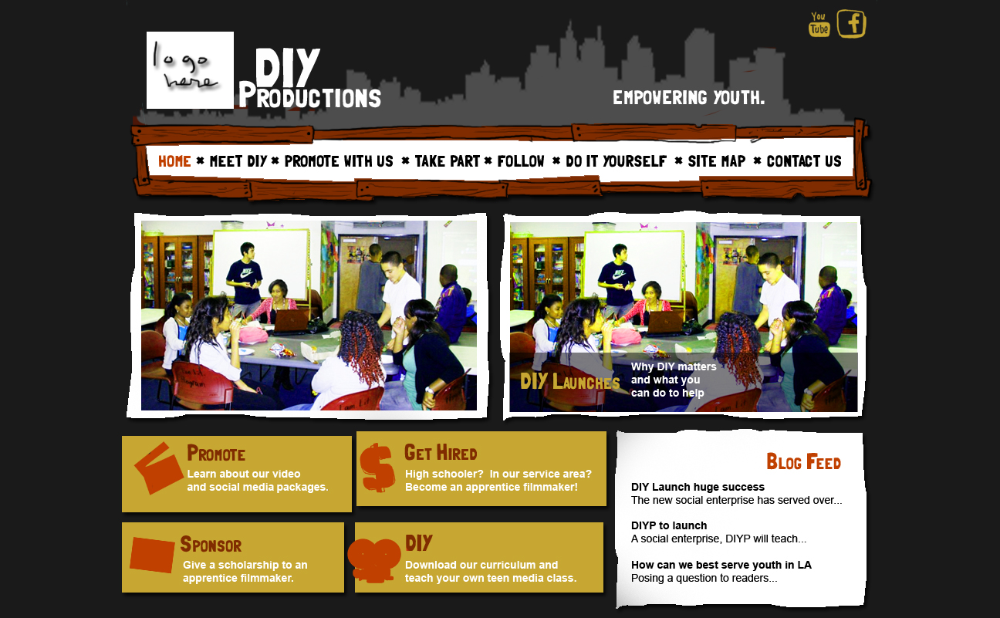

website
WNY Video Miro Community Website
![[node-title]](../../sites/transmissionproject.org/files/imagecache/resource-thumbnail/resources/thumbs/squeakyWebsite.png)
Organization:
Squeaky Wheel A website organized and designed by corps member Goda Trakumaite.
http://buffalo.mirocommunity.org/
“We would like for this site to be a showcase that fosters the work, stories, and ideas coming out of and into the region (Buffalo and Western New York). We would like every viewer to also be a producer, whether it is of more video content, comments on videos made by others, or suggestions about how this site could be improved.”
DIY Productions Website Mock-up
![[node-title]](../../sites/transmissionproject.org/files/imagecache/resource-thumbnail/resources/thumbs/DIYProductions.png)
Website design by corps member Melissa Niiya for Little Tokyo Service Center’s initiative DIY Productions.

Digital Media Asset Map
![[node-title]](../../sites/transmissionproject.org/files/imagecache/resource-thumbnail/resources/thumbs/humboldtMap.png)
Organization:
Access Humboldt An online, interactive map of Humboldt County digital media resources by corps member Sam Kaplan.
Visit the map here.
Graphic Designer
Organization:
Mobile Film School VISTA Name:
Amy Simon
Program Start:
7/2008
Project Description:
Graphic and layout design for all MFS website, print and media materials to increase professional look and branding of MFS name.
- Liaison between MFS and AIR interactive web designers and developers to enhance the accessibility of our current website
- Propose and implement a new, more user-friendly design for the website
- Develop methods for increasing user-interaction with our website and online resources
- Research and develop affordable streaming videos technologies to implement on website
- Research and implement a more efficient transaction processing system for online donations
- Assist in the development, beta-testing, and implementation of a customized database and business management software
- Regularly update and maintain all content on website
- Monitor our online social networking participation
- Help improve and develop our internet presence
Project Outcome:
Amy was the photographer and photo design editor for the Bowl-A-Roma fundraising event, the Bob Bullock Video project, and the Luling documentary workshop
Amy did the graphic layout and design for all business materials, workshops and events, including flyers, postcards, promo packets, program materials, business cards, manuals, proposals, signs, newsletters, and brochures.
Amy also did website design and development; she created page layouts and templates, icons, titles, drop down menus, picture galleries, and content.
Digital Expansion Initiative Program Developer
Organization:
People's Production House VISTA Name:
Alexis Walker
Program Start:
6/2007
Project Description:
The Digital Expansion Initiative uses participant-led media production, education, and organizing to expand meaningful access to all New Yorkers. The VISTA will support the project by producing and helping others produce radio and by conducting research.
- Develop a comprehensive understanding of the barrier to technology access in poor communities in New York City by training members of 5 - 10 non-profit organizations to research and report on the state of Internet access in their organizations and among their constituencies
- Produce and distribute community-produced content documenting the state of Internet access in New York City as a way to engage new constituents in the development of broadband infrastructure of programs to bridge the digital divide
- Based on community-produced content, produce and distribute comprehensive report on barrier to Internet access in New York City
- Build a new constituency of engaged and conversant experts on community access technology, based in communities with no or limited access to technology, and the capacity to continue expanding that constituency
Project Outcome:
During her year of service, Alexis served as the program associate for a new program: the Digital Expansion Initiative. In this capacity, she served as support for the program - maintaing contact records and contacting organizations for partnerships, consolidating data, researching articles and resources, updating website content, conducting audio interviews, administering a written survey, writing articles on public policy of telecommunications, and presenting the initiative’s finding and methods in workshops around NYC and the country.
Outreach Coordinator
Organization:
Mountain Area Information Network VISTA Name:
Meegan Kelly
Program Start:
6/2007
Project Description:
The CTC AmeriCorps member will support our ongoing outreach and community development efforts. Meegan will work on a number of projects including: computer/internet digital literacy outreach, revitalize latino website, public outreach and education on media issues, and project assistance for MAIN
- recruit volunteers and service providers
- Project Coordination
- Public Speaking
- Write press releases
- Fundraising assistance
- Organize task forces/coalitions
- Conduct outreach
- Volunteer coordination
- Website administration
- Write training curricula; Train trainers
- Grant writing and research
- Database management
- Design brochures, posters
- Develop community partnerships
- Assist in project evaluation
Outreach Coordinator
Organization:
U Mass Boston/College of Public & Community Service VISTA Name:
Erin Taylor
Program Start:
9/2006
Project Description:
The VISTA will work with the Project’s support staff and VISTA Leaders to provide coordination and support to other VISTAs in the field on professional, personal, and some administrative matters relating to service.
- Assist VISTA leaders and staff in coordinating training and conference attendance/participation
- Work with VISTA leaders on the development and coordination of collaborative projects developed by VISTAs throughout the year
- Coordinate the avenues of communications among VISTAs (blogs, newsletter, website)
- Assist with organizational outreach efforts
- Coordinate outreach to educational institutions and online communities that may be good sources of VISTA recruits
Project Outcome:
Erin Taylor has proved herself to be both hard working and innovative during her VISTA service and has greatly improved the ability of the CTC VISTA Project to accomplish its mission and programs.
As Project Development Associate, Erin was instrumental in improving our outreach and communication. Erin developed a comprehensive plan for outreach to colleges and other media technology programs, significantly enlarging our pool of qualified VISTA applicants. Additionally, Erin’s research of organizational and institutional partners led us to having one of the most successful VISTA placement rounds ever, with more than 100 organizations submitting applications. On her work on The Digest, our organization’s newsletter and review, Erin worked closely with staff and VISTAs to produce four unique and high-quality issues.
In addition to outreach work, Erin greatly improved our fundraising capacity. Erin researched more than 40 funding institutions, documenting her processes and providing a strong foundation for future development. She leaves many templates for proposals and grant language, and submitted many letters of introduction and one complete proposal.
Lastly, Erin has proved invaluable in her collaborations with other local VISTAs and VISTA Leaders. In addition to helping to bring about two successful Pre-Service Orientations and our monthly area meetings, Erin has greatly helped in encouraging discussion and creating collaborations between members and organizations.
Software Engineer
Organization:
Community Software Lab VISTA Name:
Kamala Kalluri
Program Start:
2/2006
Project Description:
Ms Kallrui will be part of the group working to automate our processes so we can grow from serving 30 organizations to serving 100 or more organizations.
- Create or select customer relations management database
- Automate services provisioning
- Improve tech support processes
- Other related technical duties assigned
Project Outcome:
- Completed the downtime database
- Worked with several community groups to improve their websites
- Designed new business cards
- Participated in our presentation at the NTEN conference
- Updated our customer directory
- Developed application to measure server failures and failure causes
- Developed interface between teen center donor database and website to allow people to add themselves to the database
- Worked on installing and configuring photo gallery software on web server
- Installed and configured blog software, integrated it to website
Youth Program Development
Organization:
DANEnet VISTA Name:
Catherine Moore
Program Start:
1/2007
Project Description:
The VISTA will extend the youth programs DANEnet is currently providing. The VISTA will also work with agencies that want to expand their technology needs. In particular the Youth Resource Network, a collaboration of over 35 youth serving agencies and the recipient of the Partners for After School Success program, which has proposed a Web application that will help them coordinate activities. The VISTA will also recruit and organize DANEnet’s first Day of Service.
Website Development
Organization:
Young Entrepreneurs Society, Inc. VISTA Name:
Stephen Wills
Program Start:
1/2007
Project Description:
The overall goal of the VISTA is to build our capacity to sustain and grow our services to low-income teens and adults by expanding our regional web portal serving residents, organizations and business, and developing an on-line version of the Odd Jobs Squad program that helps youth advertise their odd job services.
- Expand and sustain new regional web portal by refining design, promoting the site to area residents and organizations, and soliciting sponsorship support from business
- Design, develop, launch and sustain an on-line site that enables youth and adults to sell and buy odd jobs services that is supported by organization and business sponsors.